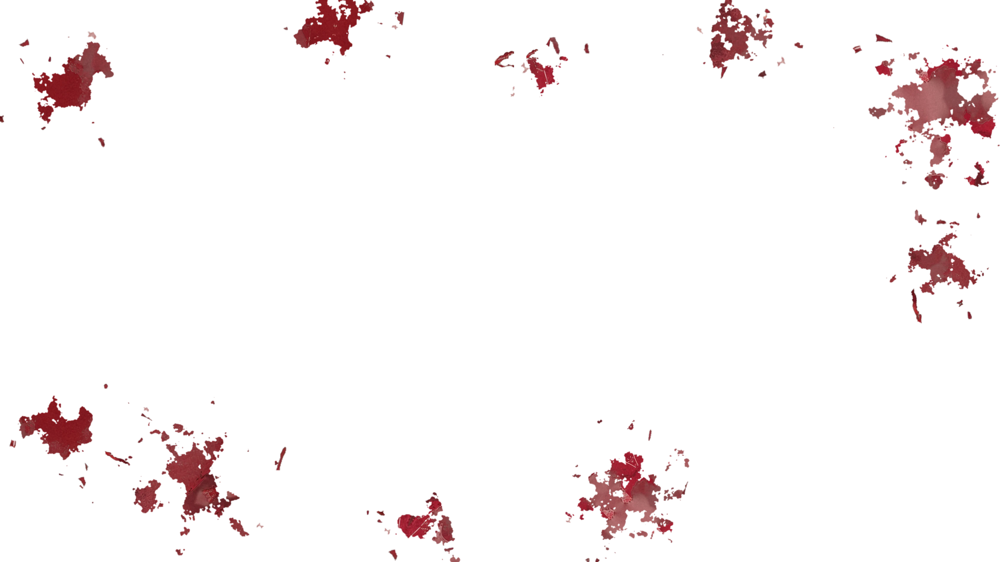
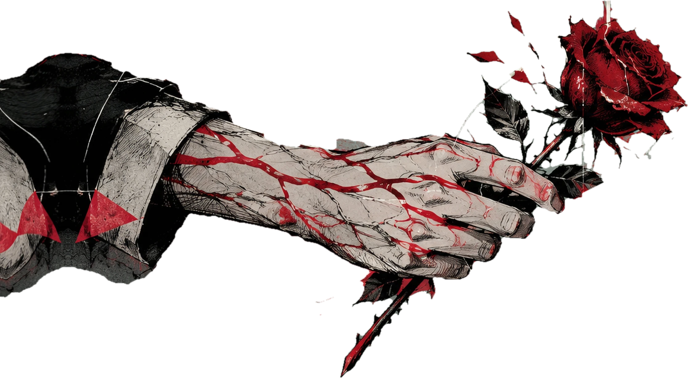
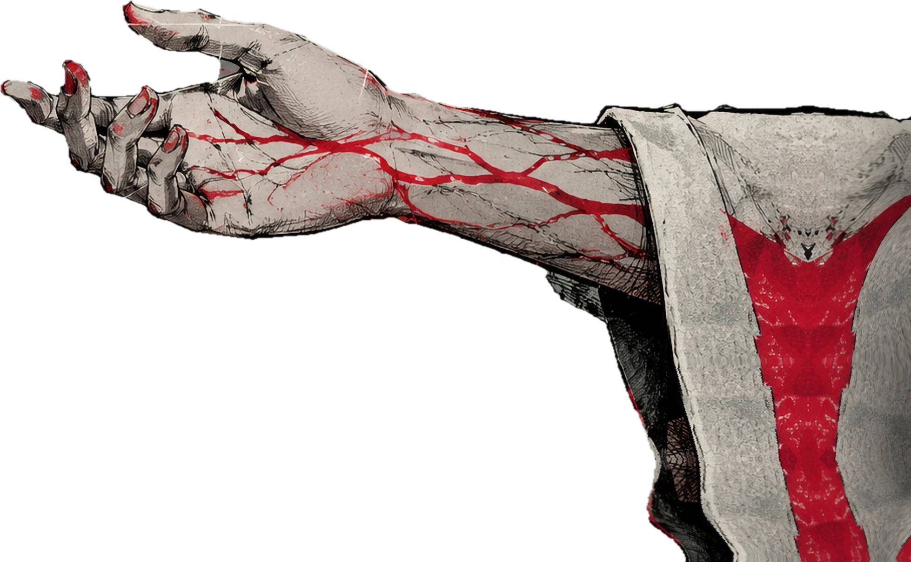
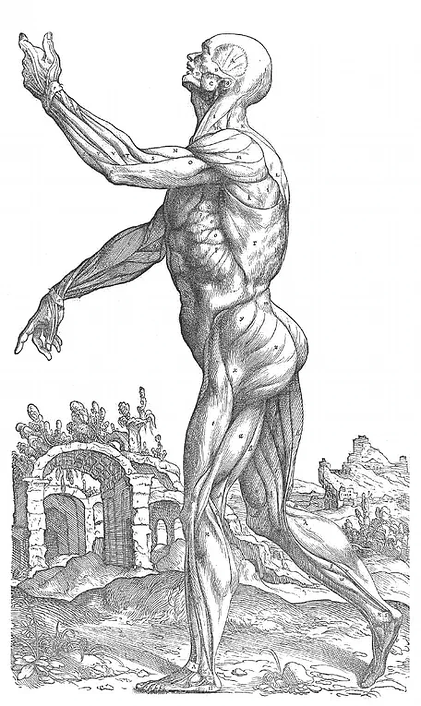
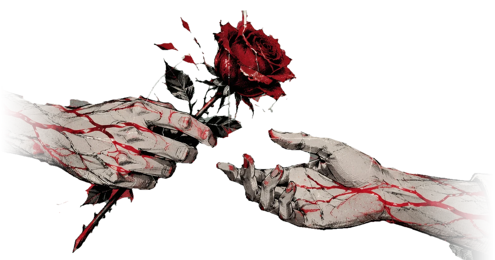

Ilustração: duas mãos vêm de lados opostos. A da esquerda oferece uma rosa vermelha;
a da direita está aberta, quase alcançando a flor, mas as duas ainda não se tocam.

BOND
ESTABLISHED


M. extensor digitorumossa metacarpaliaRosa sp. (uso não clínico)
calma.
Some connections are not written in words.
A little something, just because.
Vínculo · Nv. 0
Out 2026
Uma nota
Isso começou com um “ah, eu gosto de The Microphones”.
Eu levei a sério demais. Foi divertido.
(a rosa é só uma rosa.)
Tabula II
De manibus et rosa

quase alcança

a um dedo de distância
Bond Established · MMXXVI
Ficha de personagem
O autor desta página
Rank up: nenhum.Só uma página.
CSS8quase tudo no lugar certo
Paciência com CSS3ver: duas horas, tecnicamente
Latim2conferido na última hora
Anatomia1a Medicina é com você
Ouvido para boas bandas9ponto extra: The Microphones
Coragem de mandar isso6cabe inteira em um link
Habilidade especial transformar uma conversa em uma página inteira.